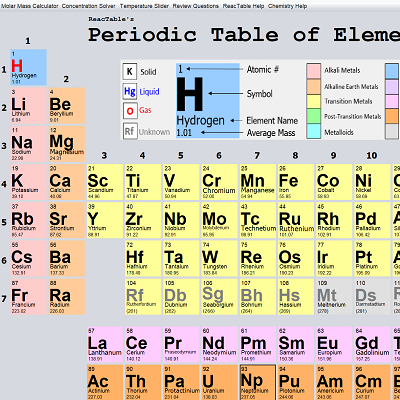

User vs computer game of TicTacToe, where it is impossible for the user to win
The computer uses the Minimax algorithm to analyze the current state of the TicTacToe board, and it simulates all possible outcomes
The computer makes its move so that the game follows a desired path which always allows the computer to win or tie
Interactive Periodic Table

The Interactive Periodic Table, filled with the functionality necessary to assist a high school chemistry student
The table displays all the elements and their relevant information. The user can also click on each individual element to find out more
There are several functions implemented throughout the table to assist students. There is an interactive molar mass calculator, allowing students to select and add multiple elements